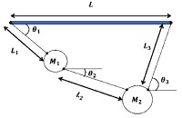
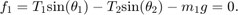
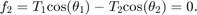
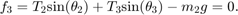
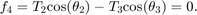
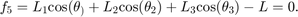
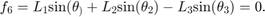
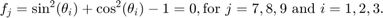

Problem 2(a,b)

Contents
a)
- Forces on M1 must be balanced (f1 and f2 in (b)).
- Forces on M2 must be balanced (f3 and f4 in (b)).
- Summation of horizontal component of L1, L2, and L3 must be equal to L (f5 in (b)).
- Summation of vertical component of L1, L2, and L3 must be zero (f6 in (b))
clear clc fprintf(['a) Constains:\n',... '1.Forces on M1 must be balanced (f1 and f2 in (b)).\n',... '2.Forces on M2 must be balanced (f3 and f4 in (b)).\n',... '3.Summation of horizontal component of L1, L2, and L3 must be equal to L.(f5 in (b))\n',... '4.Summation of vertical component of L1, L2, and L3 must be zero(f6 in (b)).\n'])
a) Constains: 1.Forces on M1 must be balanced (f1 and f2 in (b)). 2.Forces on M2 must be balanced (f3 and f4 in (b)). 3.Summation of horizontal component of L1, L2, and L3 must be equal to L.(f5 in (b)) 4.Summation of vertical component of L1, L2, and L3 must be zero(f6 in (b)).
b)
- Balacing horizontal components of forces on M1

- Balcing vertical components of forces on M1

- Balacing horizontal components of forces on M2

- Balcing vertical components of forces on M2

- Horizontal length restriction

- Vertical length restriction

Since we are treating sines and cosines of angles as variables, we have extra restrictions

fprintf(['\nb)\nf1=T1*sin(theta_1-T2*sin(theta_2)-m1g\n',... 'f2=T1*cos(theta1)-T2*cos(theta2)=0\n',... 'f3=T2*sin(theta2)+T3*sin(theta3)-m2g=0\n',... 'f4=T2*cos(theta2)-T3*cos(theta3)=0\n',... 'f5=L1*cos(theta)+L2*cos(theta2)+L3*cos(theta3)-L=0\n',... 'f6=L1*sin(theta)+L2*sin(theta2)-L3*sin(theta3)=0\n',... 'fj=sin^2(thetai)+cos^2(thetai)-1=0, for j=7,8,9 and i=1,2,3.\n'])
b) f1=T1*sin(theta_1-T2*sin(theta_2)-m1g f2=T1*cos(theta1)-T2*cos(theta2)=0 f3=T2*sin(theta2)+T3*sin(theta3)-m2g=0 f4=T2*cos(theta2)-T3*cos(theta3)=0 f5=L1*cos(theta)+L2*cos(theta2)+L3*cos(theta3)-L=0 f6=L1*sin(theta)+L2*sin(theta2)-L3*sin(theta3)=0 fj=sin^2(thetai)+cos^2(thetai)-1=0, for j=7,8,9 and i=1,2,3.
c)
See p1c.m.